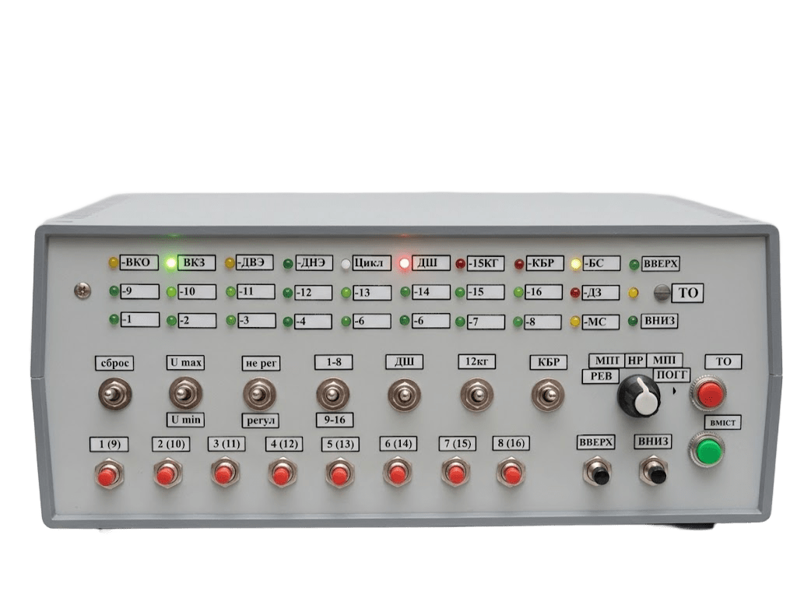

Стенды для ремонта и диагностики лифтовых плат
Имитируют работу плат управления в одиночном режиме. Режимы работы стендов соответствуют алгоритму работы платы управления на лифте.

Лифты типа УЛ, УКЛ, УЭЛ · до 16 / 30 этажей
01 — Каталог
Модели стендов
Каждый стенд имитирует работу платы на лифте, что позволяет найти и устранить неисправность на рабочем столе.

Лифты типа УЛ, УКЛ, УЭЛ
Стенд для ремонта и диагностики лифтовых плат ПУ-1, ПУ-3, МПУ, ЦПУ
Стенд предназначен для диагностики и ремонта плат управления пассажирскими лифтами типа ПУ-1, ПУ-3, МПУ, ЦПУ. Устройство позволяет имитировать работу плат управления в одиночном режиме до 16 или 30-ти этажей. Режимы работы стенда соответствуют алгоритму работы платы управления на лифте.
- Режим работы в «безшунтовом» варианте (по импульсному датчику), позволяет полноценно калибровать плату по импульсам и тестировать её в данном режиме.
- Поддержка плат с проходной кабиной. Добавляются каналы проверки и имитации датчиков ВКО”, ВКЗ”, ДТО”.
- Поддержка платы типа ЦПУ. Для этого дополнительно изготавливается переходной жгут с встроенным коммутатором управляющих сигналов.
- Поддержка плат для регулируемого привода (не использовалось в 2009–2010 годах).
- Значительно доработано программное обеспечение, изменены некоторые параметры обработки датчиков и сигналов. Изменён алгоритм режима «Цикл».

Станции управления ШУЛК, ШУЛМ
Стенд для ремонта и диагностики лифтовых плат ПКЛ-17, ПКЛ-32
Стенд предназначен для диагностики и ремонта плат управления пассажирскими лифтами типа ПКЛ-17, ПКЛ-32 различных модификаций. Конструкция позволяет имитировать работу плат управления в одиночном режиме до 17 этажей (ПКЛ-17) и до 30 этажей (ПКЛ-32). Все режимы соответствуют алгоритму работы платы управления на лифте.
- Режим работы в «безшунтовом» варианте (по импульсному датчику), позволяет полноценно калибровать плату по импульсам и тестировать её в данном режиме.
- Поддержка плат для регулируемого привода. Для этого дополнительно изготавливается жгут для подачи сигналов рег. привода.
- Значительно доработано программное обеспечение, изменены некоторые параметры обработки датчиков и сигналов. Изменён алгоритм режима «Цикл».
- В матрицу и обработку добавлены некоторые датчики, которые вводились в лифтах ШУЛМ на протяжении последних лет (ПО, фотореверс и др.).

Системы УЛЖ-10, УПЛ-10/17
Стенд для ремонта и диагностики лифтовых плат ЯУД, УЛУ, ЯВН (УЛЖ-10), БУП, БУД, БВПВ, Селектор (УПЛ-10/17)
Стенд предназначен для диагностики и ремонта плат управления пассажирскими лифтами типа ЯУД, ЯЛУ, ЯВН (УЛЖ-10) и БВПВ, БУП, БУД, СЦ10/17 (селектор). Устройство позволяет имитировать работу плат управления в одиночном режиме до 10 этажей. Режимы работы стенда соответствуют алгоритму работы плат управления на лифте.
- Доработано программное обеспечение, алгоритм движения и остановок между этажами. Устранены незначительные ошибки раннего ПО.
- Разработан жгут для подключения полного комплекта ячеек УПЛ к стенду, без использования «корзины». По желанию Заказчика данный жгут дополнительно изготавливается.
02 — Услуги
Ремонт электронных плат и оборудования управления лифтами
В связи с высокой загруженностью ремонт плат УЛЖ и УПЛ временно приостановлен. Исключения возможны только по предварительной договорённости и при точно указанной неисправности.


Оборудование в работе
Включая преобразователи частоты, а также модернизацию стендов, приобретённых ранее (в 2009–2017 годах).
Порядок заключения договора
Направьте заявку
В произвольной форме, с обязательным указанием характера неисправности и типа электронного оборудования.
Приложите реквизиты
Карточку предприятия — для выставления счёта и выписки итоговых документов.
Отправка и получение
ТК «Деловые линии», СДЭК, либо иным способом по согласованию с Заказчиком.

Опция · к стенду ЯУД / УЛУ / ЯВН
Жгут для подключения полного комплекта ячеек УПЛ
Разработан жгут для подключения полного комплекта ячеек УПЛ к стенду, без использования «корзины», что в разы облегчает ремонт. На жгуте смонтирован блок питания и управления, который ранее также требовалось устанавливать в кроссировочный блок, как отдельную ячейку.
- Подключение полного комплекта ячеек УПЛ без «корзины»
- Все платы в открытом виде на столе перед ремонтником
- Блок питания и управления смонтирован прямо на жгуте
03 — Видео
Видео обзоры
Ремонт блоков питания, преобразователей частоты, лифтового оборудования и доработки инструмента.
Ремонт импульсного блока питания ББП-80
KEB F5 15kW после ремонта. Неисправность пульта KEB 200-С
Ремонт импульсного блока питания S-200-24 (24 В, 8.3 А)
Ремонт автоматического зарядного устройства для АКБ
Ремонт импульсного блока питания 12 В 8,5 А
Ремонт лифтового фотобарьера. Вандализм.
CNC 3018 доработка. Убираю люфт оси Z.
Подогрев будки для собаки.
Ремонт мультиметра MAS 838L
Магнус 21. Ошибка Е1. Ремонт.
Разделительный трансформатор 220 х 220 вольт
CNC 3018 концевые выключатели. Борьба с дисконнектами.
Ремонт импульсного БП, 12 вольт, 3 А.
Доработка мультиметра Mastech MY-68. Режим автоотключения.
Доработка мультиметра MY68. Питание от аккумулятора. Автоотключение 2.
Micromaster 440. Быстрый запуск частотного преобразователя
Обзор демонтажной паяльной станции ProsKit SS 331 на примере демонтажа IGBT сборки.
Тест выпайки слота материнской платы.
Магнус 21. Ошибка Е2. Ремонт частотника привод дверей.
Преобразователь частоты AS 620. 49 ошибка.
04 — Заявка
Заказать стенд
Опишите, что нужно сделать: модель стенда, тип платы или характер неисправности. Мы свяжемся с вами для уточнения деталей.
Контакты
stend@liftstend.ru rz3gt@mail.ruДоставка: ТК «Деловые линии», СДЭК или по согласованию.
Как вас зовут?
Услуга, которая вас интересует
Ваш номер телефона
Ваша электронная почта
Расскажите конкретно, что нужно сделать
Нажимая кнопку, вы соглашаетесь на обработку персональных данных.